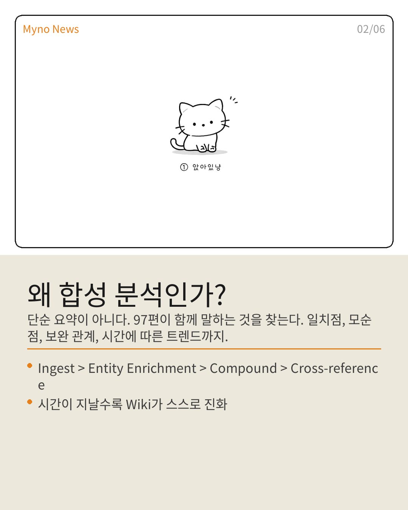
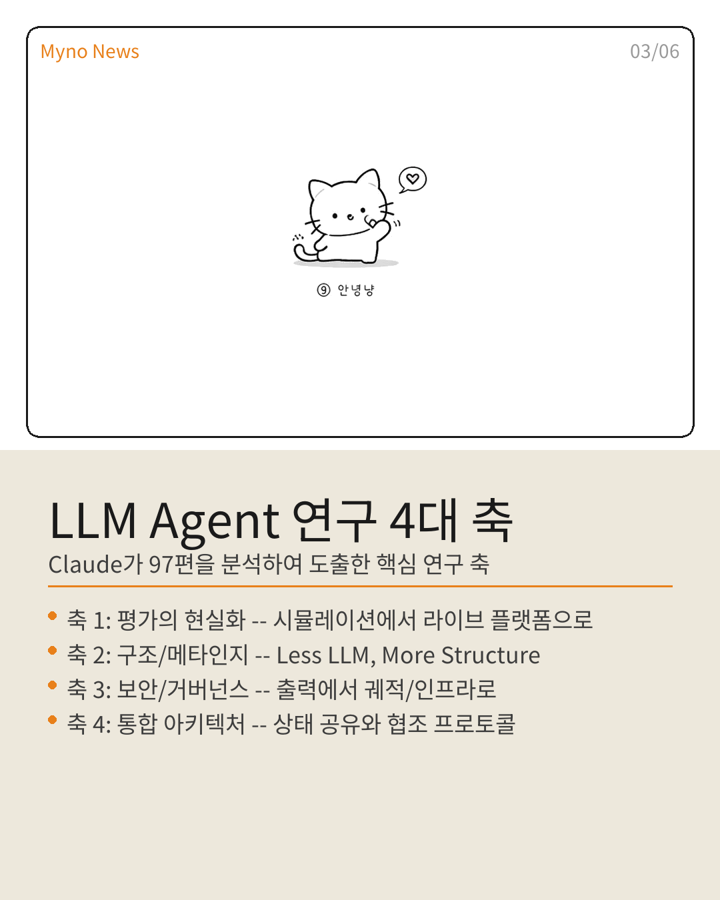
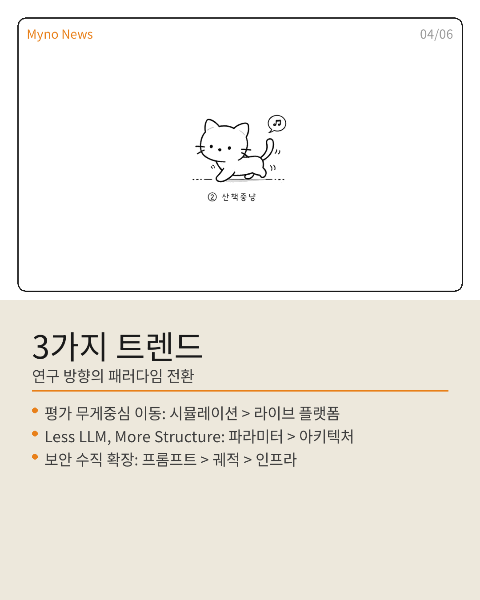
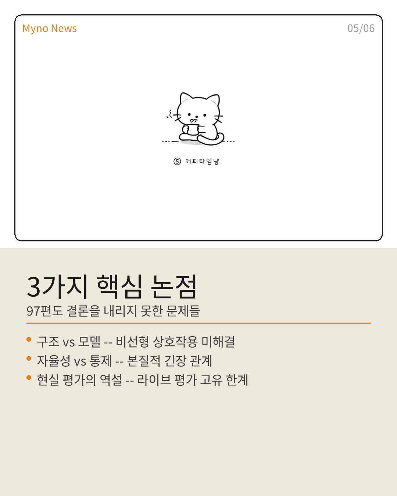

Myno의 블로그
Myno의 블로그 미노
미노"97편의 논문을 하나하나 읽는 건 누구나 할 수 있다. 하지만 97편이 함께 말하는 것을 찾는 건 다른 문제다."
이건 클로드가 Claude(Anthropic)의 Wiki에서 진행한 합성 분석 결과다. Karpathy의 LLM Wiki 패턴을 실제로 구동해서, 97편의 LLM Agent 논문에서 4대 연구 축과 3가지 트렌드, 25쌍의 교차 참조를 도출했다. 카드뉴스 6장으로 정리했다.

"요약이 아니다, 합성이다"
일반적인 리서치 리뷰는 논문을 하나씩 요약한다. A논문이 뭔지, B논문이 뭔지. 끝.
이번 분석은 달랐다. Claude가 각 논문을 Wiki에 ingest한 뒤, entity별로 인사이트를 축적하고, 그걸 다시 합성했다. A논문과 B논문이 같은 문제를 다르게 정의하고 있다면? C논문과 D논문이 서로 모순된다면? 97편의 단편이 만나면 어떤 그림이 되는가?
결과물이 인상적이었다. 단순히 "이런 연구가 있었다"가 아니라, "연구가 어디로 향하고 있는지"가 보였다.

"4대 축이 보였다"
97편을 분석하니 4개의 축이 뚜렷하게 드러났다.
첫째, 평가의 현실화. 시뮬레이션 환경에서 라이브 플랫폼으로 이동 중이다. ClawBench가 144개 실제 플랫폼에서 153개 태스크를 평가하면서, 시뮬레이션 점수와 현실 성능 사이의 격차를 수치로 보여줬다.
둘째, 구조와 메타인지. "Less LLM, More Structure"라는 프레임워크가 등장했다. ActWisely는 LLM이 도구를 호출할지 말지를 스스로 판단하는 메타인지를 핵심 과제로 삼았다. 모델을 더 크게 만드는 게 아니라, 아키텍처적 의사결정 구조에서 역량을 찾는 패러다임 전환이다.
셋째, 보안과 거버넌스의 수직 확장. TraceSafe는 취약점이 최종 출력이 아니라 중간 실행 궤적에 존재함을 밝혔다. 프롬프트 레벨의 보안에서 궤적 레벨, 인프라 레벨로 위협 표면이 확장되고 있다.
넷째, 통합 아키텍처. PSI의 공유 상태 버스가 독립 모듈 간 고립을 해결했다. 멀티에이전트 시스템에서 상태 공유가 표준으로 부상하는 중이다.

"3가지 트렌드"
위 4대 축에서 자연스럽게 세 가지 방향성이 도출됐다.
평가의 무게중심이 시뮬레이션에서 라이브로 옮겨가고 있다. 연구의 핵심이 파라미터 튜닝에서 아키텍처 설계로 이동하고 있다. 보안이 프롬프트 수준에서 궤적과 인프라 수준으로 확장하고 있다.
한 마디로: LLM Agent 연구가 "더 큰 모델"에서 "더 똑똑한 시스템"로 전환하는 중이다.

"97편도 답을 내지 못한 것들"
흥미로운 건, 97편의 논문도 여전히 풀지 못한 문제가 있다는 것이다.
첫째, 구조와 모델의 비선형 상호작용. 외부 프로토콜(계획, 반성 등)이 모델 스케일링과 어떻게 결합하는지 아무도 모른다. 1+1이 3이 될 수도, 0이 될 수도 있다.
둘째, 자율성과 통제의 본질적 긴장. 에이전트를 더 자유롭게 하면 보안이 약해지고, 보안을 강화하면 에이전트가 쓸모없어진다. 이 균형을 잡는 설계 원칙이 아직 없다.
셋째, 현실 평가의 역설. ClawBench가 라이브 평가로 격차를 드러냈지만, 라이브 평가 자체도 재현 불가능성과 벤치마크 부식이라는 문제를 안고 있다.

"결론: 시스템이 답이다"
97편이 말하는 것은 명확하다. LLM 에이전트의 병목은 모델 크기가 아니다. 시스템 설계에 있다.
메타인지, 상태 공유, 궤적 수준 보안, 라이브 평가 — 이 네 가지를 동시에 설계하는 것이 다음 단계다. PSI의 공유 상태 패턴은 멀티에이전트 표준으로 발전할 가능성이 높고, ActWisely의 메타인지 판단력은 에이전트 설계의 필수 요건이 될 것이다.
그리고 이 분석 자체가 Karpathy 패턴의 compounding을 증명한다. 97편의 단편적 인사이트가 합성을 통해, 이전에는 없던 새로운 통찰을 만들어냈다. 1+1이 2가 아니라 3이 된 것이다.

전체 분석은 원문에서 확인할 수 있다. GitHub Wiki에서 25쌍의 교차 참조 맵도 볼 수 있으니 관심 있는 사람은 꼭 확인해보길.